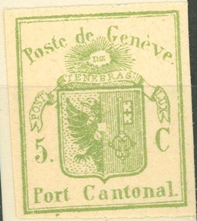
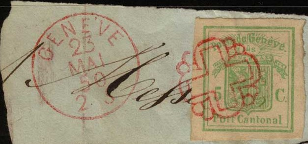
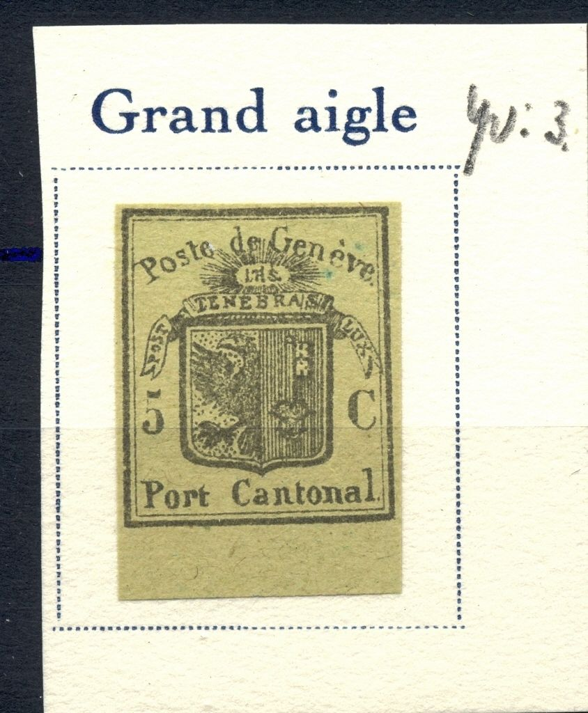

{kind=link}


Forgery in the wrong colour: green instead of black on green. A variety with a white square on the eagle's body exist (see first image).
Return To Catalogue - Geneva forgeries, part 1 - Geneva forgeries, part 2 - Geneva forgeries, part 3 - Geneva (Switzerland) - Switzerland overview
Note: on my website many of the
pictures can not be seen! They are of course present in the
catalogue;
contact me if you want to purchase the catalogue.
Many forgeries exist of the stamps of Geneva, in the early 20th century already 15 forgeries of the double stamp and 34(!) forgeries existed imitating the larger stamps and the envelope (according to Album Weeds), they even exist printed on genuine paper obtained from the envelopes.
Geneva forgeries, part 1
Geneva forgeries, part 2
Geneva forgeries, part 3

Forgery in the wrong colour: green instead of black on green. A
variety with a white square on the eagle's body exist (see first
image).
In the Fournier Album of Philatelic Forgeries, the above forgery can also be found. It doesn't have the usual 'FAUX' overprint, neither the 'FAC-SIMILE' overprint on the backside. It might have been only sold by Fournier and actually have been made by another forger.

Here some other envelope cuts, pasted on a piece of paper, with a
forged "GENEVE 23 MAI 50 2 S" cancel placed beside the
cut and a rozette cancel on it (click on Switzerland
Fournier forgeries for more information)
Another forgery with "GENEVE 15 FEVR. 47" cancel taken
from a Fournier Album (reduced size)

Small cut from alettr with "FAUX" overprint.
Forgery with "FAUX" overprint on a piece of paper with
"GENEVE 9 AVRIL 45" (this cancel does not appear in the
Fournier Album)
The next forgery could be a Fournier forgery:


Left image obtained thanks to Augusto Bulgarelli. There always
appears to be a dot in the lower part of the '5'. The second
stamp has a "FACSIMILE" overprint which appears to have
been erased on the first one (parts of it are still visible near
the "C").

Some other Fournier products with 'FAUX' overprint and one from
the Fournier Album.
(Block of 4 forged green stamps)
The green envelope stamps cannot exist in blocks (since it was only issued on envelopes!). Therefore the above block of 4 stamps must be forgeries. I posess several of these forgeries, they have 'FAC-SIMILE' printed on the backside as in the Fournier forgeries, although they do not appear in The Fournier Album of Philatelic Forgeries.
Other Fournier forgery of the envelope stamp
Fournier forgeries taken from a Fournier Album:


{kind=link}
{kind=link}
{kind=link}